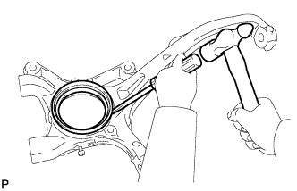

STEERING KNUCKLE > REMOVAL |
| 1. REMOVE STABILIZER CONTROL VALVE PROTECTOR (w/ KDSS) |
 |
Detach the clamp, and disconnect the connector from the protector.
Remove the 3 bolts and protector.
| 2. OPEN STABILIZER CONTROL WITH ACCUMULATOR HOUSING SHUTTER VALVE (w/ KDSS) |
Using a 5 mm hexagon socket wrench, loosen the lower and upper chamber shutter valves of the stabilizer control with accumulator housing 2.0 to 3.5 turns.

| 3. DISCONNECT CABLE FROM NEGATIVE BATTERY TERMINAL |
| 4. DISCONNECT FRONT SPEED SENSOR LH |
 |
Remove the bolt, skid control sensor clamp and sensor wire.
 |
Using a 5 mm hexagon socket, remove the bolt and speed sensor from the knuckle.
| 5. REMOVE FRONT AXLE HUB SUB-ASSEMBLY LH |
Remove the front axle hub (Click here).
| 6. DISCONNECT TIE ROD END SUB-ASSEMBLY LH |
Remove the cotter pin and nut.
 |
Using SST, disconnect the tie rod end LH from the steering knuckle.
| 7. DISCONNECT FRONT LOWER BALL JOINT ATTACHMENT LH |
 |
Remove the 2 bolts and disconnect the attachment from the steering knuckle.
| 8. REMOVE STEERING KNUCKLE LH |
Support the front suspension lower arm LH with a jack.
Remove the clip and nut.
 |
Using SST, disconnect the upper ball joint from the steering knuckle.
Remove the steering knuckle.
| 9. REMOVE STEERING KNUCKLE OIL SEAL LH |
 |
Using a screwdriver and hammer, tap out the oil seal.